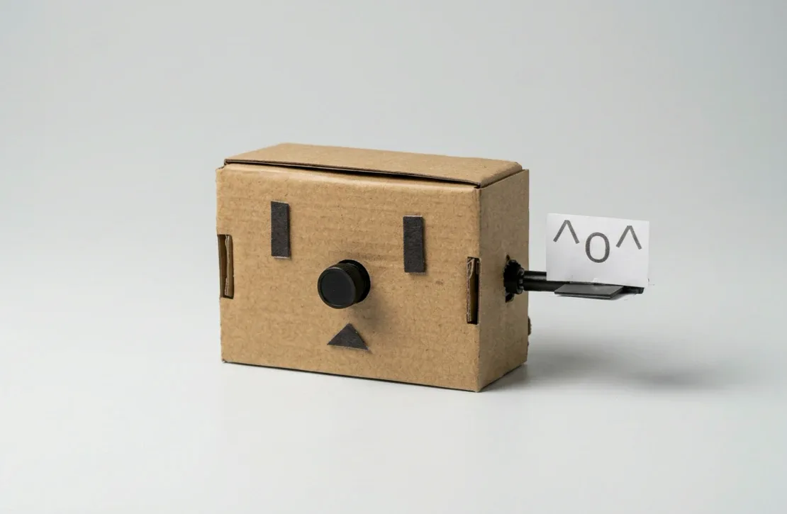
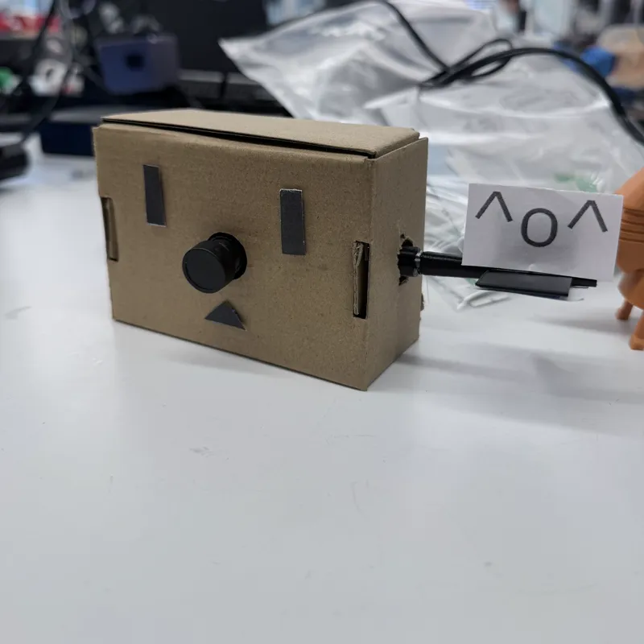
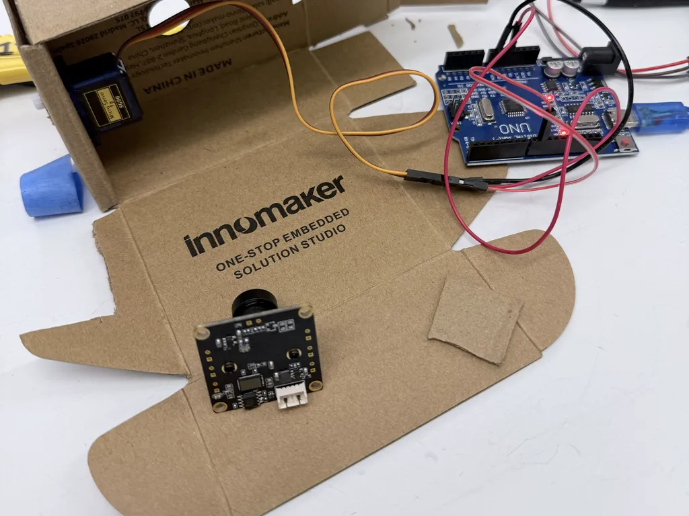

A cardboard robot that scores your outfit. Stand in front of it, it takes one look, and a servo flips the score card up or down. How it decides is a black box, on purpose: the fun is guessing how a machine “judges” taste.
Turn on your camera and let the judge see today’s outfit.
Everything stays in your browser. Nothing is uploaded.

